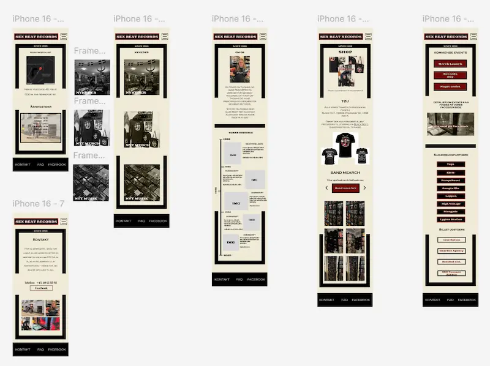
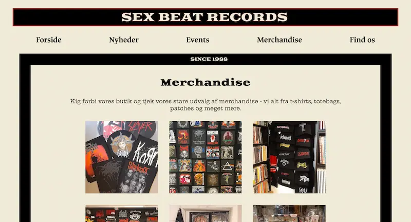

TEMA 5
GRUNDLAEGGENDE
INDHOLD
OPGAVEN - INDHOLD
TEMA 5 handler om at lære, hvordan man planlægger, designer og udvikler digitale brugerflader og medieprodukter. Der er fokus på at forstå brugerne og lave løsninger, der er nemme og gode at bruge. Man arbejder med teknikker til frontend-udvikling og tester brugeroplevelsen. Opgaven inkluderer også vigtige emner som tilgængelighed, etik og lovgivning, som er nødvendige i digitalt design. Vi skulle arbejde med en rigtig forretning og udvikle en ny hjemmeside med forretningen i tankerne og udfra deres ønsker.

Fokuspunkter i dette tema
- Redesigne eksisterende hjemmeside.
- Arbejde med rigtig virksomhed.
- Bruge scrum metode for daglig møder.
- Brugen af GitHub med VS code.
- Lottiefiles.
- Arbejde med forskellige fil formater.
- Arbejde og udvikle et site sammen i gruppe.
Processen
Opgaven startede med at sætte sig grundigt ind i forretningens behov og ønsker gennem research og dialog. Herefter blev der udarbejdet wireframes og prototyper med fokus på brugervenlighed og tilgængelighed. Frontend-udvikling blev udført med vægt på responsive designs og optimering af brugeroplevelsen, hvor der løbende blev testet og justeret baseret på feedback. Under hele processen blev der taget hensyn til etik, lovgivning og digitale standarder for tilgængelighed.
Løsning
Resultatet blev en ny, responsiv hjemmeside, som imødekommer forretningens krav og brugernes behov. Designet er brugervenligt og tilgængeligt på tværs af enheder. Der er lagt vægt på en klar struktur, god navigation og overholdelse af relevante lovkrav. Hjemmesiden understøtter en positiv brugeroplevelse og styrker forretningens digitale tilstedeværelse.
Færdige hjemmeside
Ved at klikke på knappen her til højre, er det muligt at se den endelig webside.